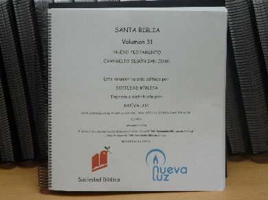
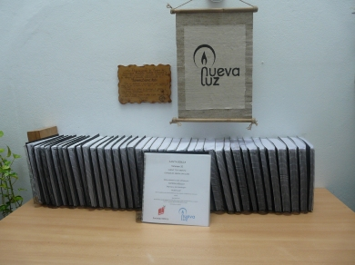

Materiales en audio
"REFLEXIONES" (Revista hablada)
Se publica cada dos meses y tiene un contenido variado con artículos y música, enfocada a la evangelización y a la edificación de personas ciegas.
Se publica cada dos meses y tiene un contenido variado con artículos y música, enfocada a la evangelización y a la edificación de personas ciegas.
"CAMINEMOS JUNTAS" (Revista hablada)
Se publica cada dos meses. Es la edición en audio de la revista del mismo título dedicada a la mujer y que se publica en Sevilla (España)
"BEREA" (Revista hablada)
Se publica cada dos meses e incluye artículos y conferencias sobre temas bíblicos. Está pensada más para ciegos creyentes.
Se publica cada dos meses e incluye artículos y conferencias sobre temas bíblicos. Está pensada más para ciegos creyentes.
"MI ENCUENTRO DIARO CON DIOS" (Devocional diario)
Se envía con una periodicidad mensual y contiene una lectura para cada día del mes con un pensamiento sobre la lectura realizada. Publicada por la Unión Bíblica, Nueva Luz realiza la versión en audio destinada al colectivo de ciegos y disminuidos visuales.
Materiales en braille

BIBLIAImprimimos en colaboración con Sociedad Bíblica de España la versión Reina Valera de 1960, compuesta por 32 volúmenes.
CURSOS BIBLICOS
Estos cursos van desde los más básicos a temas más profundos.
MATERIAL PARA NIÑOS
El actualidad estamos desarrollando material para niños ciegos o para padres ciegos con niños que ven. Para estos últimos queremos editar libros con texto en braille e imágenes.
Otros materiales
Reproductor "BIBLE TALK"
Este reproductor fabricado por Sociedad Bíblica de Japón, contiene en Nuevo Testamento y es una herramienta preciosa para las personas ciegas o disminuidas visuales ya que permite el acceso rápido a un libro, capítulo y versículo concreto que queramos oír.
Descargas
Reproductor
Daisy Player 1.05
de la ONCE
Daisy Player 1.05
de la ONCE
Nueva Luz © 2014 | nuevaluz@nuevaluz.org | diseño web